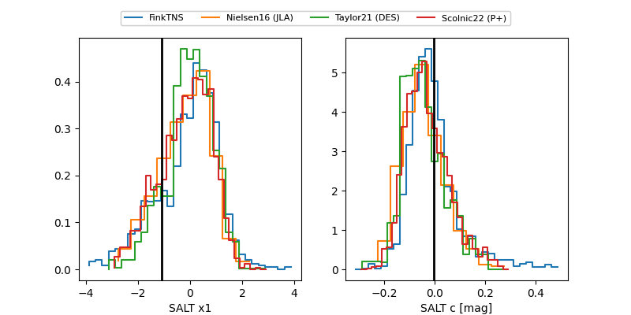

FINK: ZTF25abndszr
Lasair: ZTF25abndszr
ALeRCE: ZTF25abndszr
ZTF25abndszr (ztf,fink)
equatorial (ra, dec) = (294.4131,-20.55805)
galactic (l, b) = (19.0323,-19.08811)

last ztfg=18.17
5 ztfg detections